Public safety concerns the protection of the public, communities, and critical infrastructure from crimes, disasters, accidents, and other major threats through coordinated government and agency action. Geospatial analytics supports this effort by transforming multi-source, location-based data into visual evidence, analytical insights, and decision support across domains such as law enforcement, emergency management, transportation safety, and environmental management.
A spatial point pattern is a collection of locations at which events occur, such as forest-fire detections or road traffic accidents. A spatio-temporal point pattern also records when each event occurs, enabling analysts to examine how events are distributed and interact across both space and time. Understanding where and when such events occur helps planners and managers identify areas of concern, allocate resources, and develop evidence-informed prevention and response strategies.
Objectives
This take-home exercise investigates the spatial and/or spatio-temporal patterns of public-safety point events using:
Road traffic accidents within the Bangkok Greater Metropolitan Area for 2022
The specific objectives are:
To prepare and integrate real-world geospatial and temporal data for spatial and spatio-temporal point-pattern analysis.
To investigate first-order properties of the point pattern by examining how the intensity or distribution of events varies across space and/or time.
To investigate second-order properties by examining whether events exhibit evidence of spatial or spatio-temporal interaction, such as clustering, inhibition, or approximate randomness.
To critically evaluate the analytical assumptions, methodological choices, and limitations associated with the selected point-pattern methods.
To communicate the analytical findings effectively through appropriate geovisualisation and geocommunication.
To translate the analytical evidence into meaningful implications for public-safety planning and management.
The Data
Recorded road accidents in Thailand from 2022 were used. The data was downloaded from:
Each point represents one recorded road traffic accident, identified by acc_code and located using its longitude and latitude. Exact duplicate rows are removed. Separate accidents occurring at the same coordinates are retained because a location can experience multiple accidents.
The study covers accidents occurring between 1 January and 31 December 2022. Records are selected using the incident date rather than the reporting date, since an accident may be reported later.
The study area comprises Bangkok, Nonthaburi, Pathum Thani, Samut Prakan, Samut Sakhon and Nakhon Pathom. These six province boundaries define the Bangkok Metropolitan Region observation window. Only accident points within this window are included.
Accident coordinates are treated as WGS 84 (EPSG:4326). Both accident points and boundaries are transformed to UTM Zone 47N (EPSG:32647), allowing distances to be measured in metres. The point-pattern object is subsequently rescaled to kilometres for easier interpretation.
The analysis assumes that retained coordinates adequately represent accident locations.
Recorded road traffic accidents across Thailand. For this study, records will be restricted to Bangkok, Nonthaburi, Pathum Thani, Samut Prakan, Samut Sakhon and Nakhon Pathom.
Administrative boundaries covering Thailand. The dataset provides ADM1 layer. Province-level boundaries will be used to define the study area.
Temporal coverage
The source dataset covers 2019–2022. This study only uses 2022 accident data and retains events occurring between 1 January and 31 December 2022.
A static representation of administrative boundaries.
Relevant characteristics
The supplied CSV contains accident-level records with 18 variables. These include accident identifiers, incident and reporting timestamps, province names, reporting agencies, routes, vehicle types, presumed causes, accident types, numbers of vehicles involved, fatalities, injuries, weather conditions, coordinates and road characteristics. Longitude and latitude enable conversion into spatial points.
Vector polygon boundaries available in GeoJSON. The current ADM1 release contains 77 administrative units. Selected polygons can be combined into a single study window for spatial filtering, mapping and point-pattern analysis.
Simple feature collection with 77 features and 5 fields
Geometry type: MULTIPOLYGON
Dimension: XY
Bounding box: xmin: 97.34381 ymin: 5.612851 xmax: 105.6368 ymax: 20.46483
Geodetic CRS: WGS 84
First 10 features:
shapeName shapeISO shapeID shapeGroup
1 Roi Et Province TH-45 36821470B96343765829948 THA
2 Phayao Province TH-56 36821470B12194119812739 THA
3 Nakhon Sawan Province TH-60 36821470B58837026258254 THA
4 Nong Bua Lam Phu Province TH-39 36821470B48254980905782 THA
5 Chachoengsao Province TH-24 36821470B91271468807469 THA
6 Surin Province TH-32 36821470B33660676013176 THA
7 Nakhon Ratchasima Province TH-30 36821470B25997690360286 THA
8 Sukhothai Province TH-64 36821470B85895478064474 THA
9 Phetchaburi Province TH-76 36821470B90667358259218 THA
10 Chaiyaphum Province TH-36 36821470B61102131347890 THA
shapeType geometry
1 ADM1 MULTIPOLYGON (((103.5111 16...
2 ADM1 MULTIPOLYGON (((99.68719 19...
3 ADM1 MULTIPOLYGON (((99.08899 15...
4 ADM1 MULTIPOLYGON (((102.0808 17...
5 ADM1 MULTIPOLYGON (((100.849 13....
6 ADM1 MULTIPOLYGON (((103.4048 15...
7 ADM1 MULTIPOLYGON (((101.4098 15...
8 ADM1 MULTIPOLYGON (((99.31601 17...
9 ADM1 MULTIPOLYGON (((99.20417 13...
10 ADM1 MULTIPOLYGON (((102.3347 15...
Data inspection & cleaning
Initial inspection examines variable types, missing values, duplicate records and the coordinate reference system.
First, I exclude records from 2019–2021 and remove the province_th and route columns from the original downloaded csv. The remaining 2022 accident dataset contains 21,032 records and 16 variables. These two columns were removed because they contain Thai text, which I cannot read or understand.
Then, I check for duplicate rows and remove any duplicates, retaining one copy of each row. I then identify rows with missing coordinates (latitude and/or longitude) and remove them.
I then check for and remove invalid coordinates. Latitude must be between −90 and 90, and longitude between −180 and 180. is.finite() also excludes missing or infinite values.
# Keep valid coordinatesaccidents_clean <- accidents_clean %>%filter(is.finite(latitude),is.finite(longitude),between(latitude, -90, 90),between(longitude, -180, 180) )# Save the cleaned datawrite_csv(accidents_clean, "data/aspatial/thai_road_accident_2022.csv")
Task 2: First-Order Point-Pattern Analysis
Kernel Density Estimation (KDE) is used to examine how recorded accident intensity varies across the Bangkok Metropolitan Region (BMR). It converts accident locations into a continuous density surface, making concentrations easier to identify.
# Select the six BMR provincesbmr <- thailand_adm1 %>%filter(shapeISO %in%c("TH-10", "TH-11", "TH-12","TH-13", "TH-73", "TH-74" )) %>%st_transform(crs =32647)# Convert the cleaned accident records into spatial pointsaccidents_sf <- accidents_clean %>%st_as_sf(coords =c("longitude", "latitude"),crs =4326 ) %>%st_transform(crs =32647)
Converting the data into the objects required by spatstat. The BMR boundary defines the observation window and only accidents inside it are retained.
# Convert accidents into a point-pattern objectaccidents_ppp <-as.ppp(accidents_sf)# Define the study windowbmr_owin <-as.owin(bmr)# Retain accidents within BMRaccidents_bmr_ppp <- accidents_ppp[bmr_owin]# Analyse accident locations without attribute marksaccidents_bmr_ppp <-unmark(accidents_bmr_ppp)# Change distance units from metres to kilometresaccidents_bmr_km <-rescale.ppp( accidents_bmr_ppp, 1000, "km")# Inspect and plot the point patternsummary(accidents_bmr_km)
Planar point pattern: 3599 points
Average intensity 0.4732986 points per square km
*Pattern contains duplicated points*
Coordinates are given to 13 decimal places
Window: polygonal boundary
single connected closed polygon with 1699 vertices
enclosing rectangle: [587.1304, 712.4417] x [1484.7489, 1579.0872] km
(125.3 x 94.34 km)
Window area = 7604.08 square km
Unit of length: 1 km
Fraction of frame area: 0.643
plot( accidents_bmr_km,main ="Recorded Road Accidents in BMR, 2022")
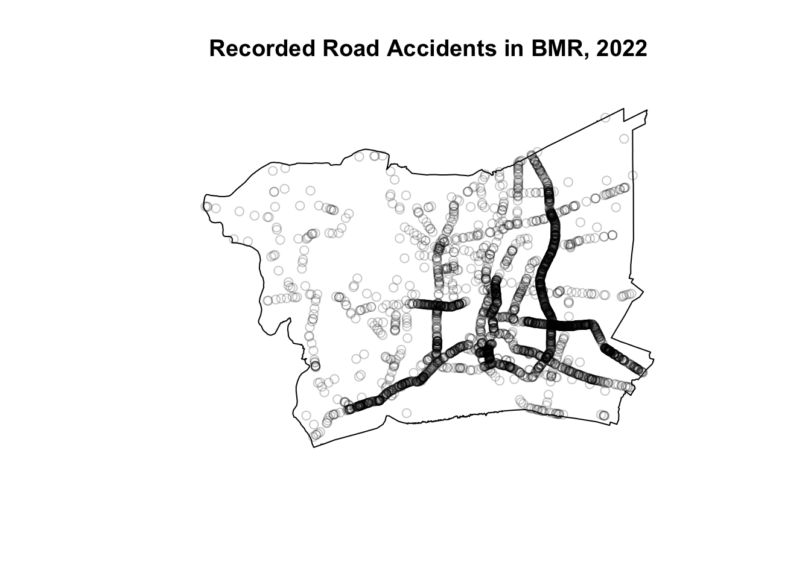
Compute the density surface
Using a Gaussian kernel with an automatically selected Diggle bandwidth. Rescaling the coordinates to kilometres makes the density values represent recorded accidents per square kilometre for 2022.
Kernel Density Estimation (KDE) is used to identify where recorded road accidents are concentrated within BMR. It transforms individual accident locations into a smooth surface showing estimated accidents per square kilometre during 2022.
# Display the selected bandwidth in kilometresbw.diggle(accidents_bmr_km)
sigma
0.02307687
# Calculate KDEkde_diggle <-density( accidents_bmr_km,sigma = bw.diggle,edge =TRUE,kernel ="gaussian")# Display the density map and its summaryplot( kde_diggle,main ="Accident Intensity in BMR, 2022")
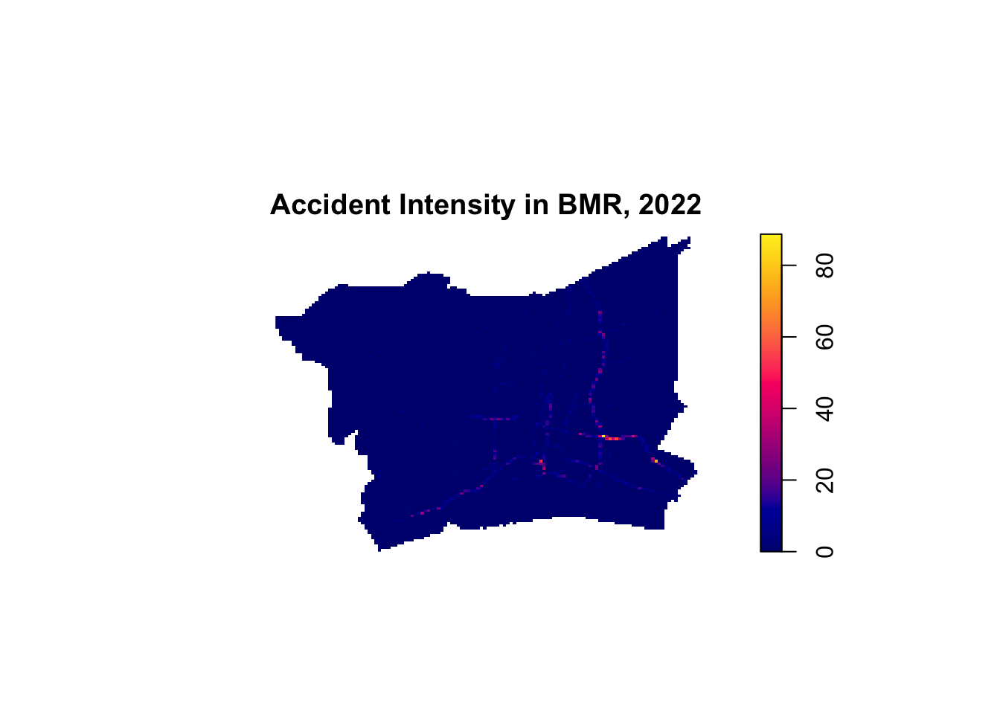
summary(kde_diggle)
real-valued pixel image
128 x 128 pixel array (ny, nx)
enclosing rectangle: [587.1304, 712.4417] x [1484.749, 1579.087] km
dimensions of each pixel: 0.979 x 0.7370174 km
Image is defined on a subset of the rectangular grid
Subset area = 7601.38225210896 square km
Subset area fraction = 0.643
Pixel values (inside window):
range = [-1.526474e-14, 88.69966]
integral = 3595
mean = 0.4729403
The bandwidth is selected automatically using bw.diggle. It controls the amount of smoothing: smaller bandwidths reveal local concentrations, while larger bandwidths show broader patterns. A Gaussian kernel gives nearby accidents greater influence than distant accidents.
Areas with higher intensity contain greater concentrations of recorded accidents and may warrant closer road-safety investigation. Areas with lower intensity have fewer recorded accidents per unit area. These patterns describe accident concentration, rather than risk per road user, because traffic volume is not considered.
The KDE map shows uneven recorded accident intensity across BMR in 2022. The highest intensity appears along a short corridor in the southeastern part of the study area with additional concentrations extending through central and southern areas. Much of the western and northern area has lower intensity. The narrow, connected concentrations suggest a pattern associated with transport corridors.
Task 3: Second-Order Point-Pattern Analysis
Research question: Do recorded accidents in BMR during 2022 show clustering or regularity at different distances compared with complete spatial randomness?
The L-function summarises neighbouring events across a range of distances. Plotting L(r) - r gives a theoretical reference of zero under complete spatial randomness. The simulation envelope helps assess whether departures exceed the variation expected.
set.seed(1234)# Randomly select up to 1,000 accidentsaccidents_sample <- accidents_bmr_km[sample(npoints(accidents_bmr_km),min(1000, npoints(accidents_bmr_km)) )]# Calculate the L-function with 28 simulationsL_accidents <-envelope( accidents_sample, Lest,correction ="Ripley",nsim =28,nrval =100,global =FALSE)
The null model is complete spatial randomness (CSR). Under this model, accident locations are independent and equally likely throughout the BMR observation window.
CSR provides a simple baseline for assessing spatial uniformity. However, it is a limited reference for road accidents because roads and traffic are unevenly distributed.
The analysis assumes that coordinates adequately represent accident locations and the BMR boundary defines the observation window. Distances are straight-line distances in kilometres. The conventional L-function uses a spatially homogeneous and directionally invariant reference.
Parameter
Explanation
set.seed(1234)
Makes the simulation reproducible.
correction = "Ripley"
Adjusts for neighbours that cannot be observed beyond the study boundary.
nsim = 28
Generates 28 simulated patterns under CSR.
rank = 1
Uses the lowest and highest simulated values as envelope limits at each distance.
global = FALSE
Produces a pointwise envelope, assessing each distance separately.
Interpreting the observed curve relative to the envelope:
Observed curve
Interpretation
Above the upper envelope
Evidence of clustering relative to CSR at those distances.
Below the lower envelope
Evidence of regularity relative to CSR at those distances.
Inside the envelope
No clear departure from CSR detected at those distances. This does not prove randomness.
The observed L-function curve lies well above the upper CSR simulation envelope across almost all positive distances shown, up to approximately 23 km. This provides evidence of spatial clustering relative to complete spatial randomness in the sampled BMR accidents. There is no indication of regularity over this distance range.
The steep rise at short distances indicates an excess of nearby accident pairs compared with the uniform random reference. However, this pattern may reflect concentrations along roads and differences in traffic volume, rather than interaction between accidents.
Task 4: Integration and Interpretation
The first-order KDE analysis shows that recorded accidents are unevenly distributed across BMR. Higher intensity appears along narrow corridors, particularly in the southeastern area, while much of the western and northern area has lower intensity. The Gaussian kernel uses an automatically selected Diggle bandwidth and edge correction.
The second-order L-function analysis shows that the observed curve lies above the upper CSR simulation envelope across almost all positive distances displayed, up to approximately 23 km. This indicates clustering relative to complete spatial randomness, but does not establish interaction between accidents.
The findings are broadly consistent. KDE identifies where concentrations occur, while the L-function examines departures from a uniform random reference across distances. Road layout, traffic volume and reporting differences could explain both patterns without accidents influencing one another.
Some limitations remain. KDE depends on bandwidth selection. The L-function uses a sample of up to 1,000 accidents and a pointwise simulation envelope, so sampling uncertainty and distance-specific interpretation must also be considered.
Alternative explanations include the distribution of roads, traffic volume and reporting coverage.
Task 5: Geovisualisation and Analytical Interpretation
KDE map
plot( kde_diggle,main ="Recorded Accident Intensity in BMR, 2022")
The KDE map suggests that recorded accidents are unevenly distributed across BMR. Brighter areas indicate higher estimated intensity, particularly along a short corridor in the southeastern area. Additional narrow concentrations appear through central and southern areas, while much of the western and northern area has lower intensity. Values represent estimated recorded accidents per square kilometre during 2022.
However, the selected Diggle bandwidth of approximately 23 metres is much smaller than the default pixels, approximately 979 × 737 metres. The surface therefore does not adequately resolve this bandwidth, making local details and peak values unreliable. Concentrations also do not establish higher risk per road user because traffic exposure is unavailable.
The observed L-function curve lies well above the upper CSR simulation envelope across almost all positive distances displayed, extending to approximately 23 km. This indicates clustering relative to complete spatial randomness. The steep increase at short distances reflects an excess of nearby accident pairs compared with the uniform random reference. No evidence of regularity is apparent over the displayed range.
The analysis uses a random sample of up to 1,000 accidents, so results may vary with the sample. The envelope is pointwise and does not provide a global significance test. Road layout, uneven traffic exposure and reporting differences could explain the departure from CSR without interaction between accidents. The graph identifies distance scales of departure but does not locate specific accident hotspots.
Task 6: Public-Safety Planning and Management
The findings can support the initial identification of areas requiring closer road-safety investigation in BMR. The KDE map suggests concentrations of recorded accidents along narrow corridors, particularly in the southeastern area. The sampled L-function indicates clustering relative to complete spatial randomness across much of the examined distance range. These findings describe spatial patterns but do not establish their causes.
For transportation planning, the identified concentrations could guide the selection of locations for road-safety inspections. Authorities could investigate road conditions, junction design, lighting and traffic management at these locations. However, the analysis does not demonstrate that any of these factors caused the accidents.
For emergency response, the accident distribution could help identify areas where response coverage should be reviewed. Decisions about ambulance positioning or additional resources would require information on accident severity, existing facilities, travel times and service demand. The current analysis alone cannot determine suitable facility locations.
For resource allocation, areas with repeated recorded accidents could receive priority for further assessment. However, lower recorded intensity should not automatically justify reducing resources elsewhere. It may reflect lower traffic exposure, incomplete reporting or fewer but more severe accidents.
The results therefore support preliminary screening and further investigation. Traffic exposure, accident severity and reporting coverage are needed to assess risk and select appropriate interventions. As the analysis covers 2022, more recent records would also be needed for present-day planning.
Bonus: Value-Added Analysis
The additional research question is: Do the accident concentrations identified in the annual KDE remain in similar locations throughout 2022 or do they change between months?
Spatio-temporal KDE extends the annual analysis by incorporating incident month. This is useful because an annual map can conceal changes in the geographic distribution of accidents. Persistent concentrations could identify locations for continuing road-safety investigation, while concentrations appearing in particular months would lead to investigation of temporary conditions.
The analysis examines changes in recorded accident distributions and does not establish their causes or higher risk per road user.
pacman::p_load(sparr)# Use incident month as the point attributeaccidents_month <- accidents_sf %>%mutate(incident_time =dmy_hm( incident_datetime,tz ="Asia/Bangkok" ),Month_num =month(incident_time) ) %>%select(Month_num) %>%as.ppp()# Retain accidents inside BMRaccidents_month <- accidents_month[bmr_owin]# Calculate spatio-temporal KDEmonthly_kde <-spattemp.density(accidents_month)# Inspect bandwidths and observation periodsummary(monthly_kde)
Spatiotemporal Kernel Density Estimate
Bandwidths
h = 4882.467 (spatial)
lambda = 0.0285 (temporal)
No. of observations
3599
Spatial bound
Type: polygonal
2D enclosure: [587130.4, 712441.7] x [1484749, 1579087]
Temporal bound
[1, 12]
Evaluation
128 x 128 x 12 trivariate lattice
Density range: [9.448582e-22, 2.845214e-09]
# Display all months using a common colour scalefor (i in1:12) {plot( monthly_kde, i,override.par =TRUE,fix.range =TRUE,main =paste("BMR Accidents, 2022: Month", i) )}
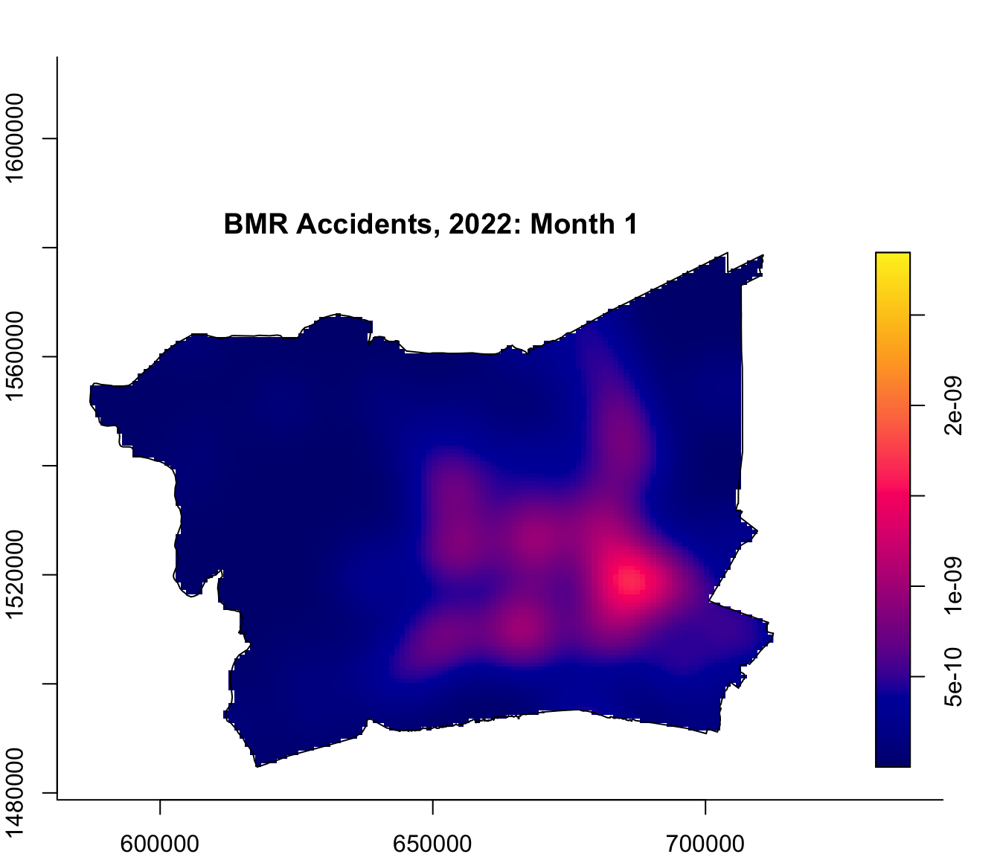
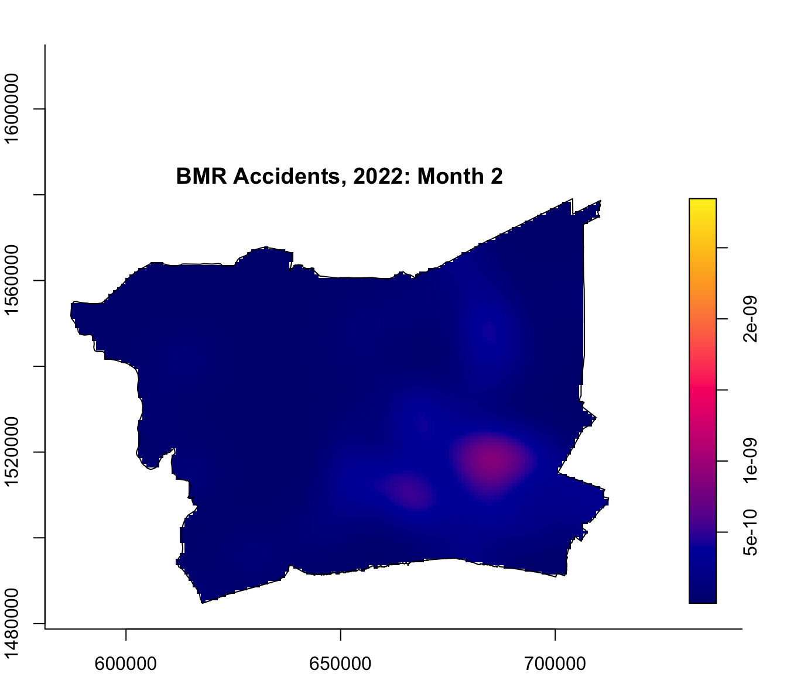
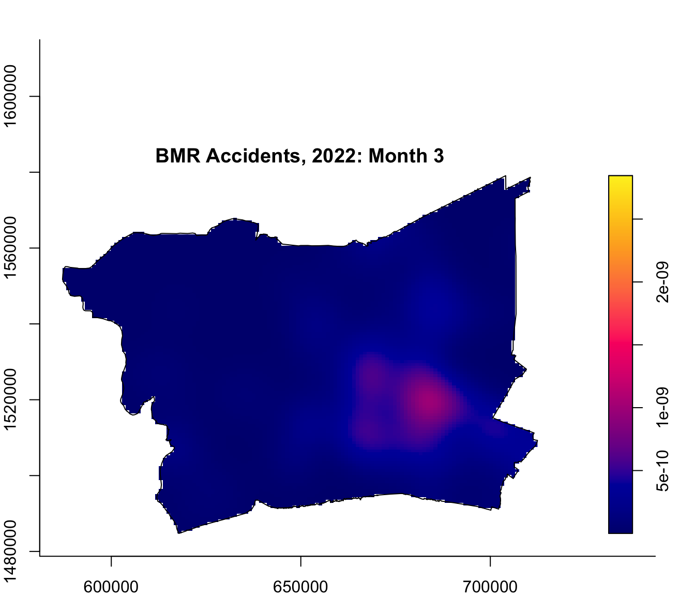
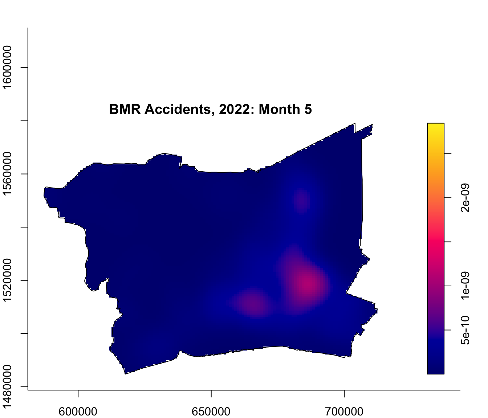
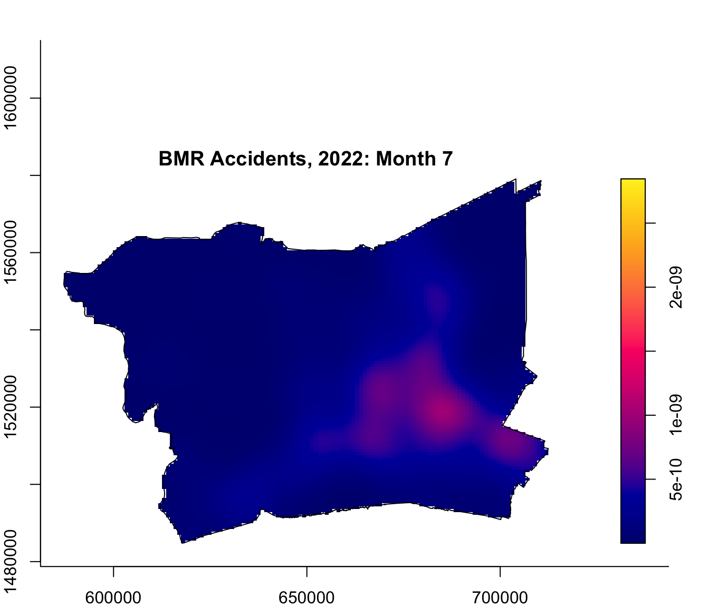
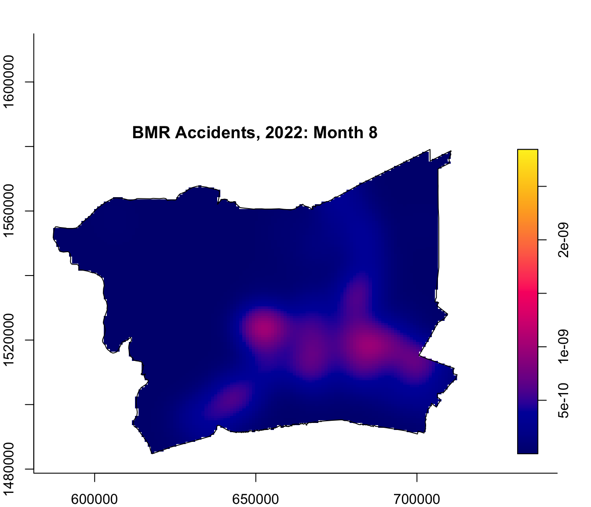
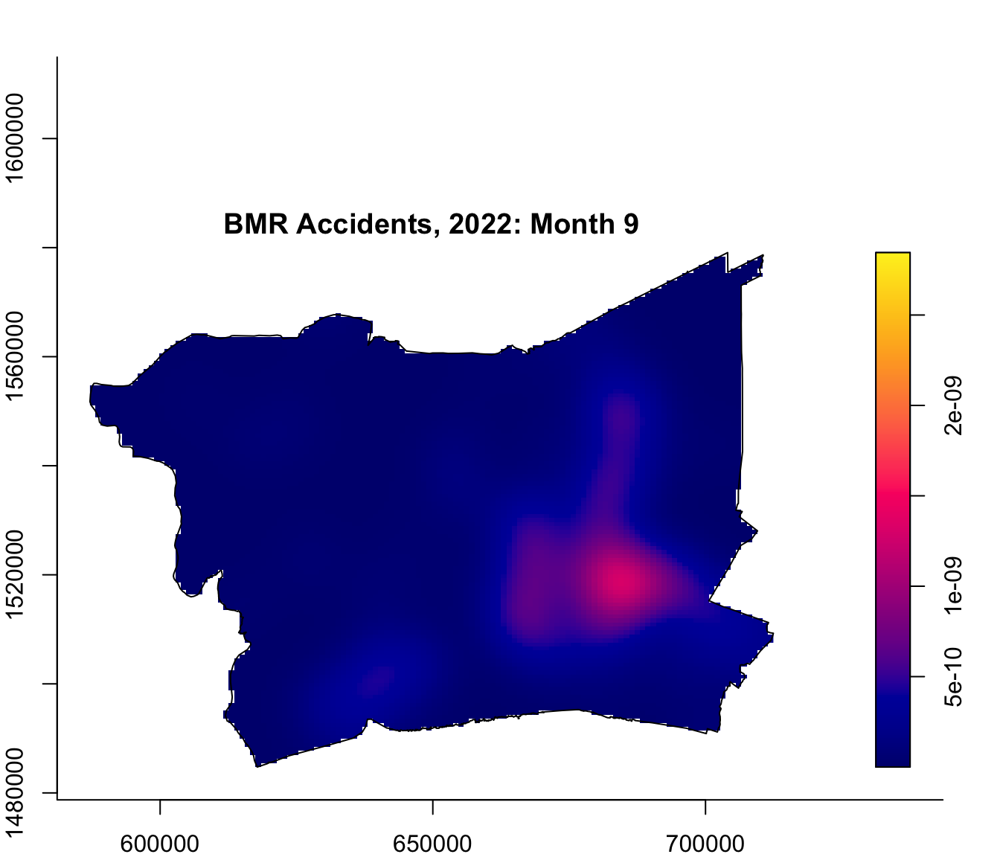
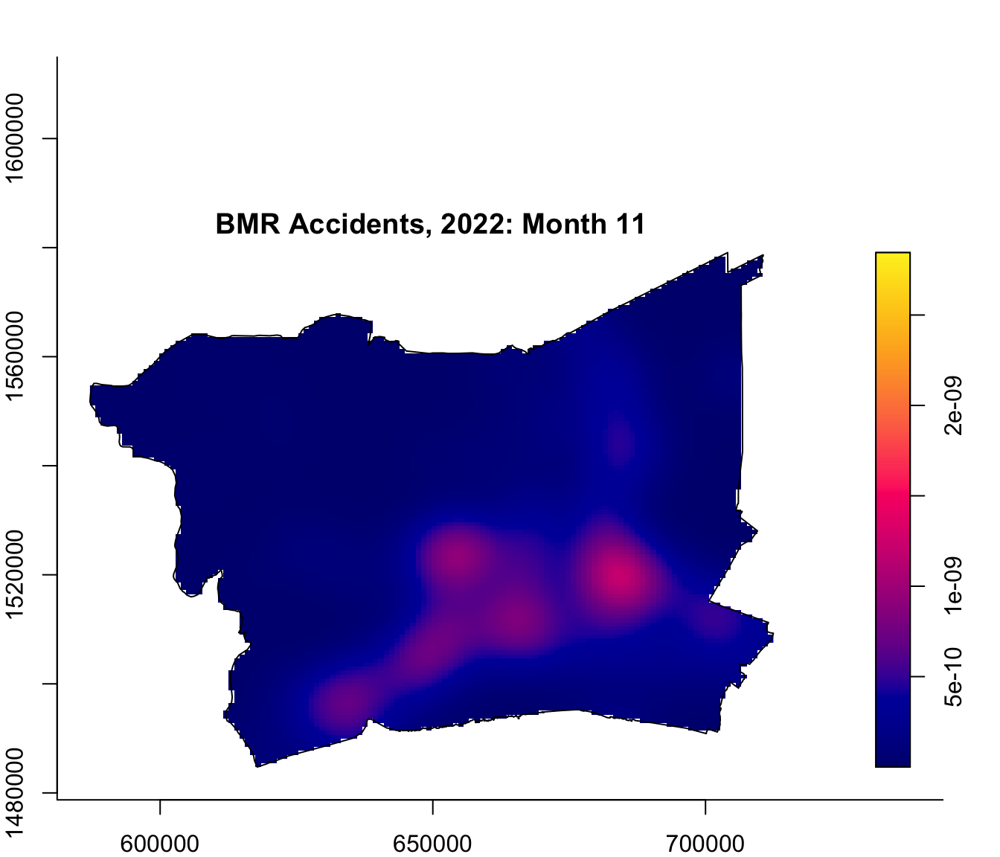
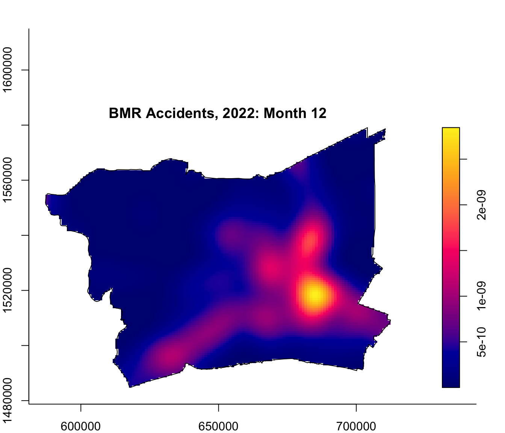
The monthly maps show recurring accident concentrations in central and southeastern BMR, while western areas generally have lower estimated density. Using the shared colour scale, January and December show more prominent concentrations than February. December displays a particularly strong southeastern concentration.
This extends the annual analysis by showing that broadly similar locations remain prominent, while the strength and extent of concentrations vary between months. These patterns could guide continuing road-safety investigation and closer examination of January and December.
The analysis includes 3,599 accidents. The automatically selected spatial bandwidth is approximately 4.88 km, while the temporal bandwidth is 0.0285 months. This provides little smoothing between months, so the maps primarily show monthly differences. One year of observations cannot establish recurring seasonality, and traffic exposure would be needed to assess risk per road user.